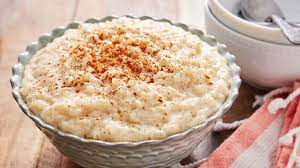

Rice Pudding

Description
Thick, creamy, and absolutely a pleasant surprise on your taste buds, the rice pudding is a treat everyone in your family should try.
Ingredients
- Rice: white rice cooked until tender
- Milk: two cups, divided
- White sugar
- Salt
- One single egg
- Raisins
- Butter
- Vanilla
Steps
- Cook the white rice
- Cook the cooked rice, some of the milk, sugar, and salt over medium heat until thick
- Stir in the remaining milk, egg, and raisins, let it cook for two more minutes
- Remove from heat and stir in the butter and vanilla